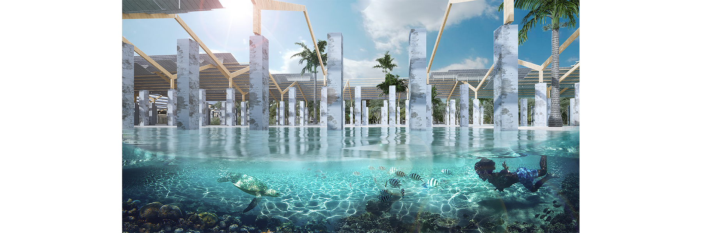
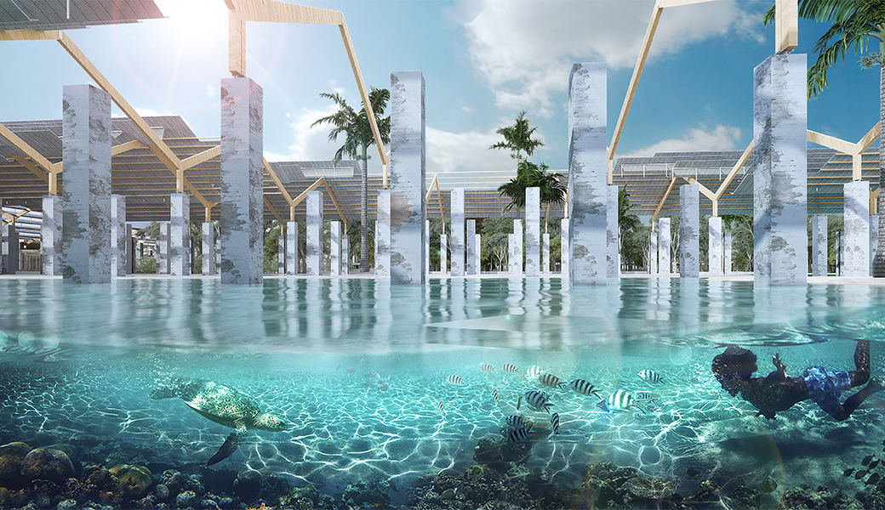
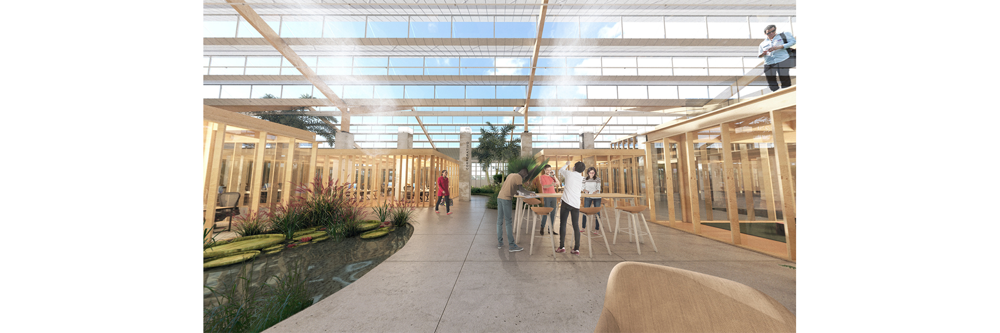
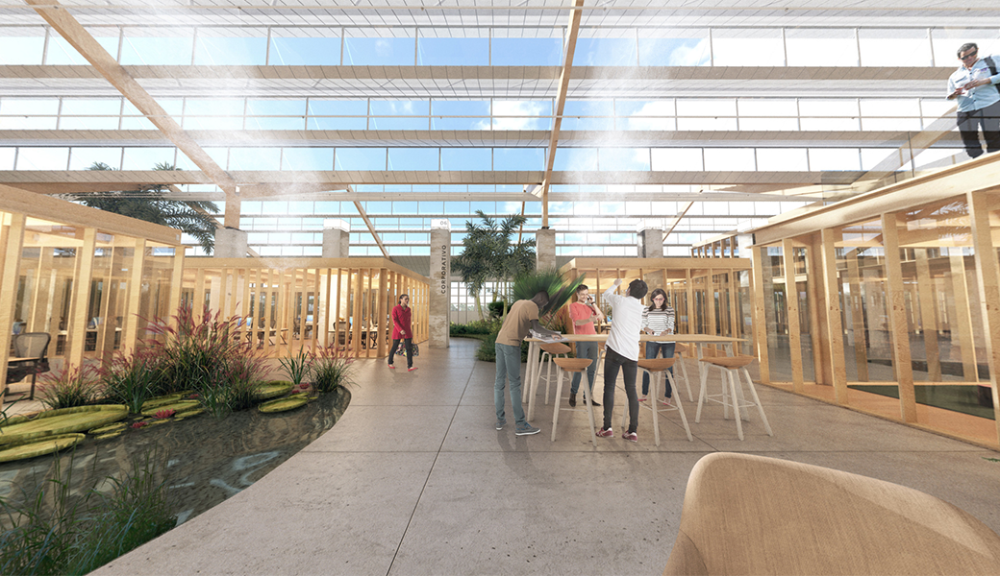
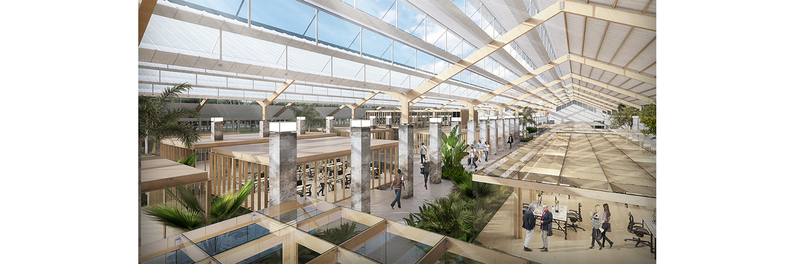
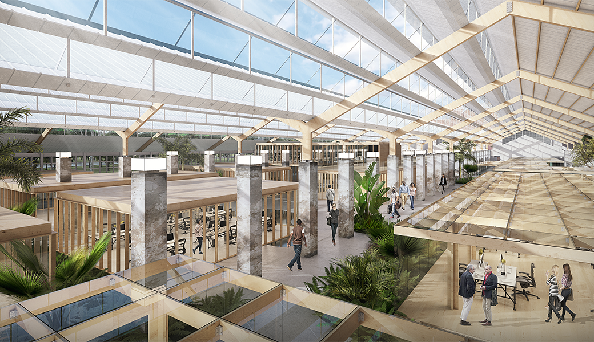
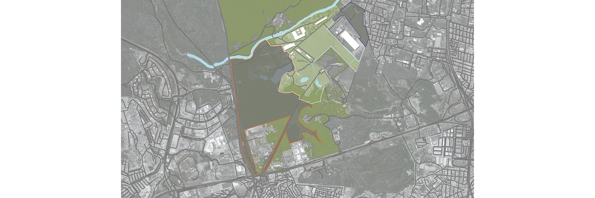
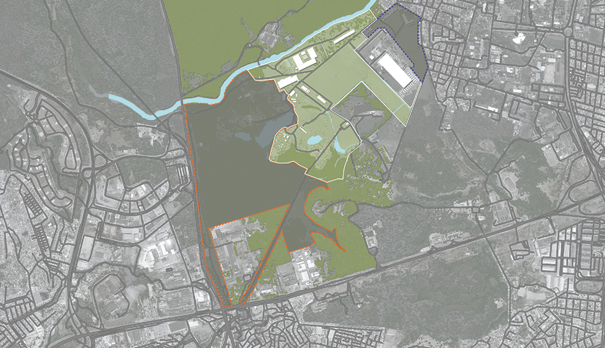
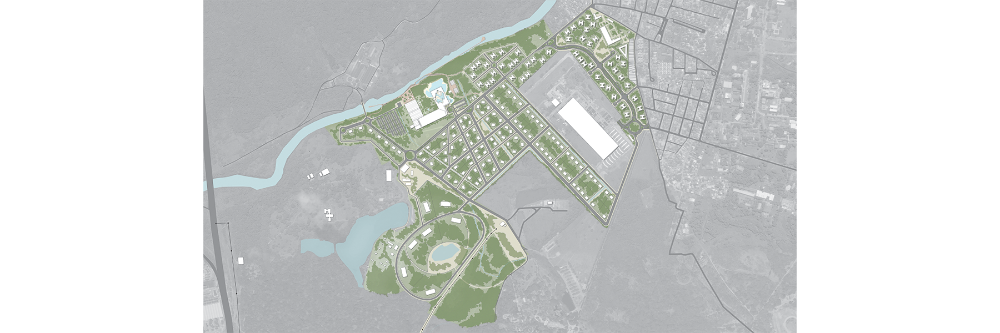
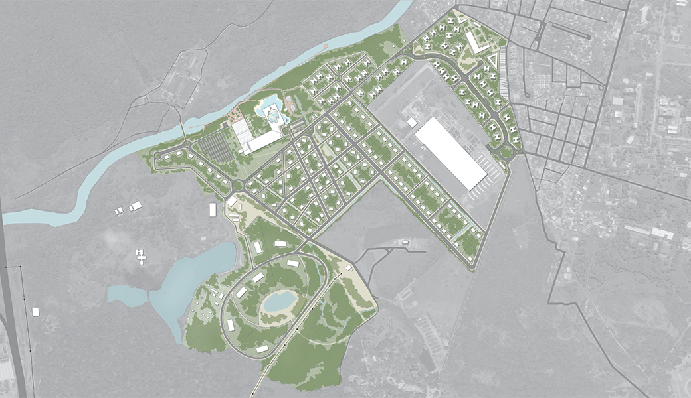
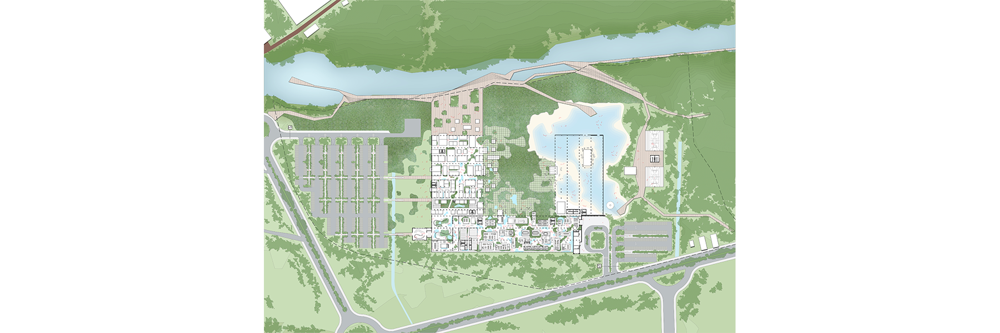
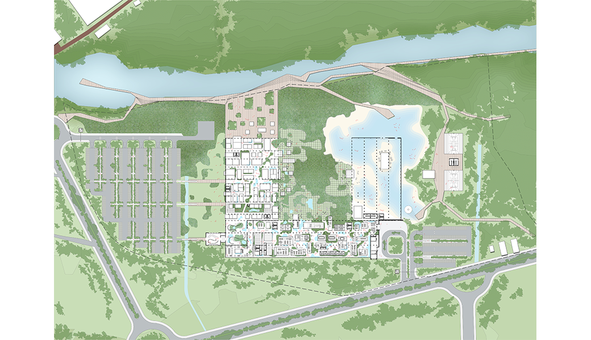
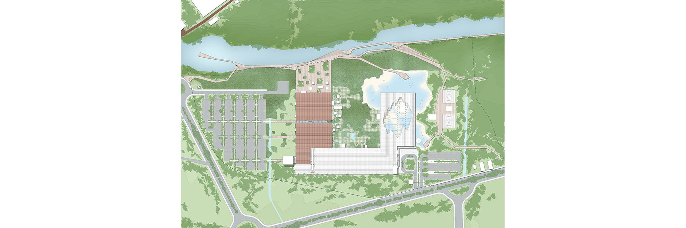
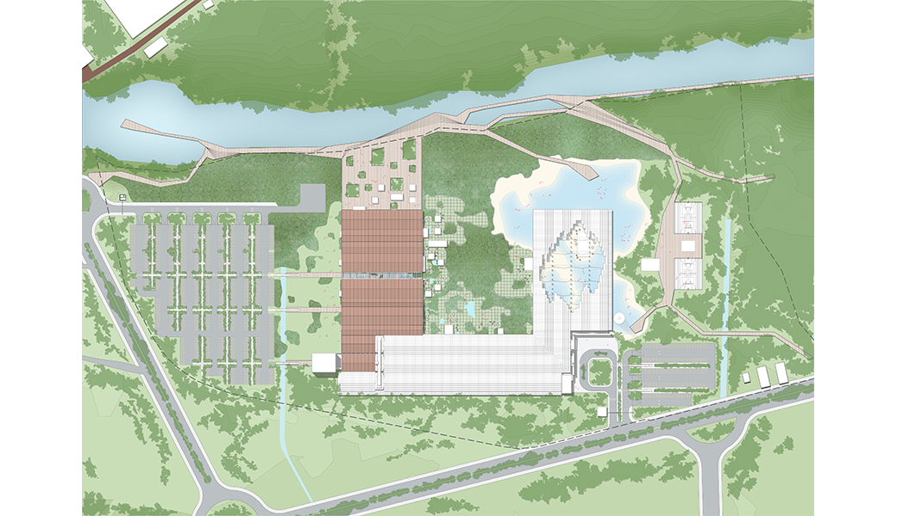
It was a competition promoted by Ironhouse Recife among major architecture firms. The proposal was to urbanize Engenho São João, currently managed by part of the Brennand family. This area has a deactivated factory (IASA) where the famous Athos Bulcão tiles were produced, which were used in several murals in Oscar Niemeyer's works.
The GCB office, which operated on this site, was located in a warehouse in unhealthy working conditions, even though it was in a vast open space. The company's desire was to bring this activity to the ruins of the factory.
Our proposition aimed not to be intrusive, taking advantage of typically Northeastern construction techniques in order to avoid, whenever possible, the use of electric light and air conditioning. The offices were positioned in small boxes and distributed to create various communal spaces between different sectors of the company. Beneath them, a large covering is proposed, which ensures cross ventilation without interfering with the layout of the pillars of the old factory. Integration with the Capibaribe River was achieved through a large deck, the beginning of a linear park that would cross the city.